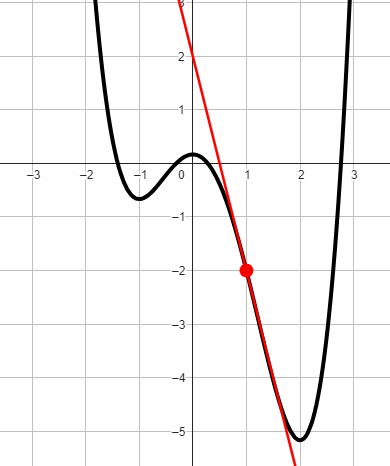
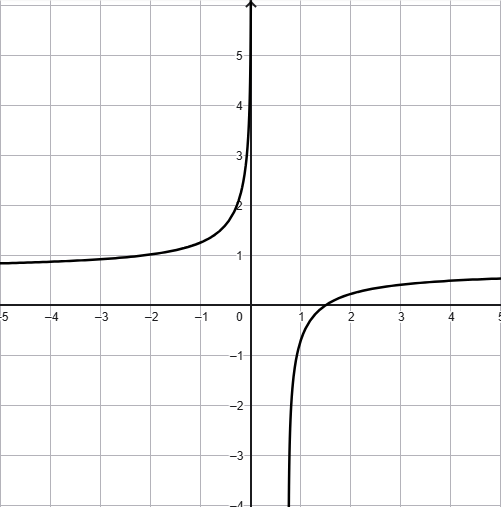

Compiti per casa
Esercizio
Consideriamo la funzione \(f\) rappresentata dal grafico in figura.

Calcolare \(f'(1)\)
Stabilire per quali valori della \(x\) la derivata della funzione \(f\) è positiva.
Esercizio
Calcolare la derivata delle seguenti funzioni
\[
f(x) = \dfrac{2}{x^3} - 7x^3 -2\sqrt[4]{x^5} \qquad g(x) = \sqrt{x^2\,e^{x}}
\]
Esercizio
Dopo aver derivato la funzione \(h(x) = ln\left(\dfrac{2x}{4x - 3}\right)\), stabilire
se il suo grafico può essere quello rappresentato in figura.

Esercizio
Data la funzione \(f(x) = \dfrac{2x}{x - 1}\)
-
studiarne il dominio;
-
il segno al variare del
valore della \(x\);
-
il comportamento agli estremi del dominio;
-
determinare infine gli intervalli di monotonia della funzione.